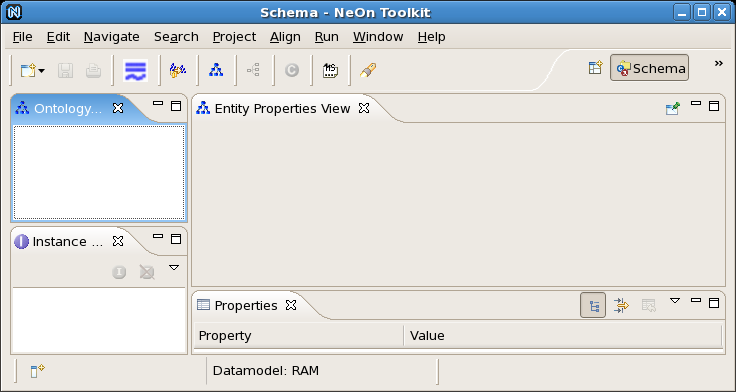

The Alignment server and API are available from the NeOn toolkit, through a dedicated plug-in: the NeOn Alignment plug-in. This allows manipulating alignments from the NeOn toolkit and sharing them through the Alignment server.
The NeOn Alignment plugin panel is obtained by selecting "Windows" -> "Show view" -> "Others..." -> "Alignment" -> "Alignment".
The NeOn Alignment Plugin allows one to automatically compute and manage ontology alignments. More precisely, the NeOn Alignment Plugin offers the following functionalities:
The figure below shows the available functions of the plugin.
These functionalities support the alignment life-cycle which can be described as follows. Alignments are first created through a matching process (which may be manual) or reused from published alignments. Then they may go through an iterative loop of evaluation and enhancement. Again, evaluation can be performed either manually or automatically, it consists of assessing properties of the obtained alignment. Enhancement can be obtained either through manual change of the alignment or application of refinement procedures, e.g., selecting some correspondences by applying thresholds. When an alignment is deemed worth publishing, then it can be stored and communicated to other parties interested in such an alignment. Finally, the alignment is transformed into another form or interpreted for performing actions like mediation or merging.
The NeOn Alignment Plugin can work in two modes: offline and online. The NeOn Alignment plug-in embedds the Alignment API that is used in the offline mode to accomplish the main functions of the plug-in. The online mode takes advantage of alignment servers to offer additionally mechanisms to store and reuse alignments.
A version of the NeonToolkit is available at http://www.neon-toolkit.org.
From this site, you download a zipped NeonToolkit file according to your Operating System (OS). After unzipping this file, a new directory is created, and within it you have a directory "plug-ins" and an executable file.
In principle, the Alignment plug-in is avalable directly from the plug-in import mechanism of the toolkit.
However, a version of NeOn Alignment plug-in is available at http://gforge.inria.fr/projects/alignapi/ . From this site you donwload the jar file "neonalign.jar" and put it in the "plug-ins" directory of the NeOnToolkit.
To run NeonToolkit with the NeOn Alignment plug-in, you launch the NeOnToolkit with the executable file (e.g. under Linux, you run the "NeonToolKit.sh" script). You will see an interface screen like the following (under Linux).

In the offline mode, which is activated by clicking on button "Offline", the NeOn Alignment Plugin can access to NeOn Toolkit ontologies (i.e. opened ontologies in Ontology Navigator) and match any pair of them. Resulting alignments can be stored as local system files and imported to Ontology Navigator as OWL ontologies.
From the Ontology Navigator, create a project, for example "OntologyProject", in this view.
From the menu bar of the NeonToolkit, open working OWL ontologies in the project "OntologyProject" created above by "File -> Import... -> Ontologies -> ". You can select either "OWL2 Ontologies from the filesystem" or "Import ontology from the web"
First we must fetch the working ontologies from Ontology Navigator by clicking on the button "Refresh". All the working ontologies will be added to two lists "Ontology 1" and "Ontology 2". Choose two ontologies to match from the two lists. Next, choose an alignment method from the list "Alignment methods". Click on "Match" to match these two ontologies with the method chosen. The resulting alignment will be added to the list "Alignments found". See the figure below.
Choose an alignment from the list "Alignments found" and click on "Import to Ontology Navigator". The alignment chosen will be imported as an OWL ontology to the alignment project which was created in Ontology Navigator. Users can navigate the OWL alignment imported in Ontology Navigator. See the figure below.
In the online mode, which is activated by clicking on button "Online", the NeOn Alignment Plugin provides all functions from the Alignment Server. Resulting alignments are stored on the server and exported to Ontology Navigator as OWL ontologies. This allows NeOn Toolkit users, with help of the Ontology Editor, to use, share or edit alignments.
From the view for the plugin, activate the on-line mode by clicking on the button "Online" and the button "Connect" becomes enabled.
To connect to the INRIA's Alignment Server from the NeOn Alignment Plugin, you have to type "aserv.inrialpes.fr" for hostname and "80" for port.
If the connection is successful, we can see the buttons "Refresh", "Match", "Import to Ontology Navigator", "Trim", "Find an alignment...", "Store an alignment..." and "Fetch available alignments..." become enable. In particular, a list of available alignment methods is visible at "Alignment methods". In addition, an Ontology Navigator project, whose name was defined above, is automatically created for alignments.
This function allows users to obtain a list of all alignments available on the Alignment Server. See the figure below.
The commands which can be activated through the interface are as follows:
Switch to the online mode in which the plug-in is connected to an Alignment server and can take advantage of its stored alignements and available matching methods. Only ontologies accessible on the web can be matched in this mode.
Switch to the offline mode in which local ontologies are matched with the matching methods available within the NeOn toolkit.
Update the two ontology choosers (Ontology 1 and Ontology 2) with the ontology available in the toolkit.
Match the ontologies selected in the ontology choosers with the method selected in the method chooser (a new alignment is created and is available in the chooser of server alignments or local alignments depending of the mode).
Trims the correspondences in the alignment selected in the server alignment chooser whose confidence is below some threshold (a new alignment is created).
The alignment selected in the server alignment chooser is imported as an ontology in the NeOn toolkit.
Stores the alignment selected in the server alignment chooser on the server (it will be kept in the database and will survive any server shutdown).
The alignment selected in the local alignment chooser is imported as an ontology in the NeOn toolkit.
Trims the correspondences in the alignment selected in the local alignment chooser whose confidence is below some threshold (a new alignment is created).
Uploads the alignment selected in the local alignment chooser on the server.
Fills the server alignment chooser with all alignments available on the server.
Fills the server alignment chooser with all alignments between the two ontologies of the ontology choosers (Ontology 1 and Ontology 2) available on the server.
Because the NeOn toolkit is developed at a steady pace, correspondences between versions are very important.
| NeOn toolkit | particular version | Alignment API |
| 1.0 | open source | 3.3 |
| 1.1 | open source | 3.4 |
| 1.2 | open source | 3.5 |
| 2.3 | open source | 4.0 |
There is an online documentation directly from the help menu of the toolkit.
More details about the NeOn Alignment plug-in can be found in Matching ontologies for context: The NeOn Alignment plug-in.
There is a screencast available from here. Another older and mute screen cast, that can be seen from here.
{kind=link}
{kind=link}
{kind=link}